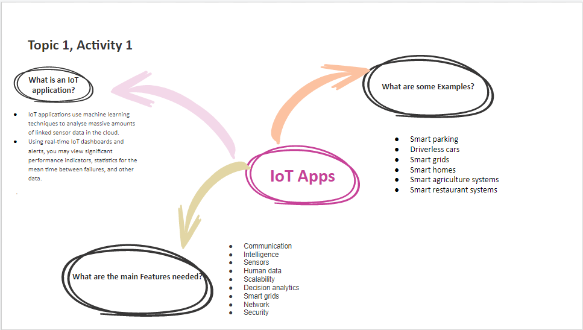

An IoT application is any system or device that uses the Internet of Things (IoT) technology to connect and communicate with other devices or systems, in order to automate or optimize various tasks and processes
Smart home automation is one of the most common IoT applications, and refers to the use of IoT devices and technologies to control and automate various systems and appliances in a home, such as lighting, heating and cooling, security, and entertainment.
Industrial IOT refers to the use of IoT devices, sensors, and data analytics in industrial and manufacturing settings to optimize operations, improve efficiency, and reduce costs. IoT applications can include everything from predictive maintenance and asset tracking to supply chain management and quality control.
Smart agriculture is an IoT application that uses sensors, data analytics, and automation technologies to optimize farming operations and improve crop yields. Smart agriculture systems can include everything from soil moisture sensors and weather monitors to drones and autonomous tractors.
Smart Health is an IoT application that uses sensors, wearables, and data analytics to improve healthcare delivery, patient monitoring, and disease prevention. Smart health technologies can include everything from wearable fitness trackers to remote patient monitoring devices and telemedicine platforms. Some key components of smart health systems include: